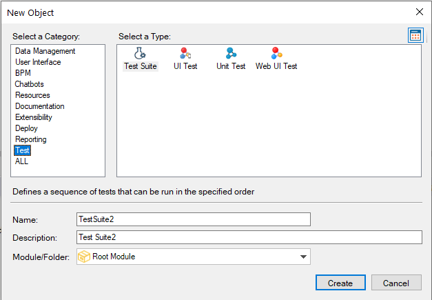

Defines a sequence of tests that can be run in the specified order with several execution settings. All test types can be mixed. Although, UI mobile tests will be executed always at the end of the execution now. It is possible to add a parameterless procedure as a setup object and also as a teardown object, i.e. the setup procedure will be executed before the first test in the suite and the teardown procedure will be executed at the end of the suite execution, regardless of the test results. Create a Test Suite How to add tests to a suiteThere are two ways for adding test objects to a test suite.
Test Suite object propertiesThere are some properties that can be set for a Test Suite object
Test lineEvery test you add to a suite can be configured with some extra settings:
Running suitesYou can run a suite by right-clicking on it and selecting the option Run Suite or from the Tests Explorer window similar to running tests. Suites can also be run from MSBuild tasks in your CI pipeline. AvailabilityThis object is available since GeneXus 17 upgrade 3.
|